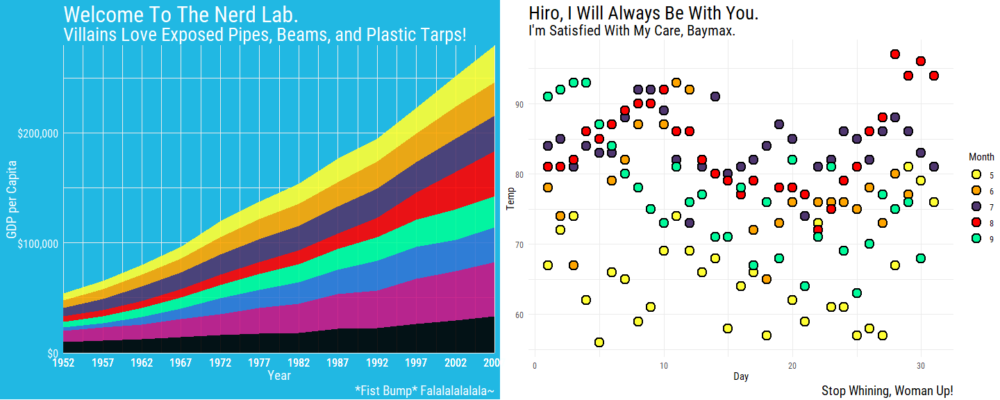
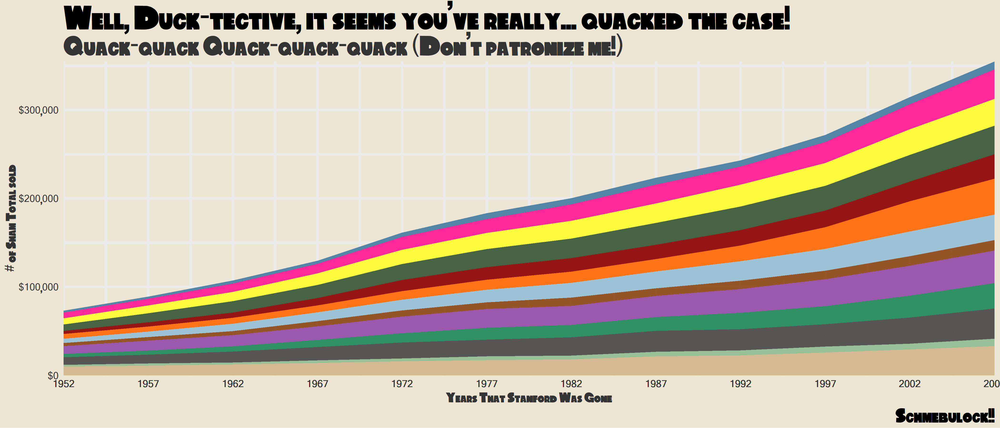

library(tvthemes)
library(ggplot2)
library(gapminder)
library(scales)
library(glue)
library(png)
library(dplyr)
library(cowplot)
library(extrafont)
loadfonts(quiet = TRUE)Examples
Code for all the examples shown in the README.
Brooklyn Nine-Nine
ggplot(mpg, aes(displ)) +
geom_histogram(aes(fill = class),
col = "black", size = 0.1,
binwidth = 0.1) +
scale_fill_brooklyn99(palette = "Dark") +
labs(title = "Do you know what it means to 'clap back', Raymond?",
subtitle = glue::glue("BE- {emo::ji('clap')} -CAUSE {emo::ji('clap')} I {emo::ji('clap')} DO {emo::ji('clap')} !"),
x = "Titles of Your Sex Tape",
caption = "Pizza bagels? Pizza rolls? Pizza poppers? Pizzaritos? Pizza pockets?") +
theme_brooklyn99(title.font = "Titillium Web",
text.font = "Calibri Light",
subtitle.size = 14)
b99d
ggplot(mpg, aes(displ)) +
geom_histogram(aes(fill = class), col = "black", size = 0.1) +
scale_fill_brooklyn99() +
labs(title = "Captain Wuntch. Good to see you.",
subtitle = "But if you're here, who's guarding Hades?",
caption = "Terry LOVES ggplot2!") +
theme_brooklyn99(text.font = "Calibri Light",
title.font = "Roboto Condensed",
legend.font = "Calibri Light")
b99l
Spongebob Squarepants
bobspog_plot <- ggplot(mpg, aes(displ)) +
geom_histogram(aes(fill = class), col = "black", size = 0.1) +
scale_fill_spongeBob() +
labs(title = "F is for Fire that burns down the whole town!",
subtitle = "U is for Uranium... bombs! N is for No survivors when you're-",
caption = "Plankton, those things aren't what fun is about!") +
theme_spongeBob(title.font = "Some Time Later",
text.font = "Some Time Later",
title.size = 22,
subtitle.size = 16,
axis.title.size = 16,
axis.text.size = 14,
legend.title.size = 14)
bobspog_plot
bobspog
## use a themed background! Inspired by ggpomological::paint_pomological()!
paintBikiniBottom(plot = bobspog_plot,
background = "background") 
bobspogbkg
Game of Thrones: House Stark, Tully, Targaryen
ggplot(mpg, aes(displ)) +
geom_histogram(aes(fill = class), col = "black", size = 0.1) +
labs(title = "The winters are hard, but the Starks will endure.",
subtitle = "We always have...",
caption = "Winter Is Coming...") +
scale_y_continuous(expand = c(0,0)) +
scale_x_continuous(expand = c(0,0)) +
scale_fill_westeros(palette = "Stark") +
theme_minimal() +
theme(text = element_text(family = "Cinzel", size = 14)) -> stark
ggplot(diamonds, aes(price, fill = cut)) +
geom_histogram(binwidth = 500) +
scale_fill_westeros(palette = "Tully", n = 5) +
labs(title = "I've seen wet shits I like better than Walder Frey.",
subtitle = "Pardon my lord, my lady. I need to find a tree to piss on.",
caption = "- The Blackfish") +
theme_minimal() +
theme(text = element_text(family = "Cinzel", size = 10),
title = element_text(family = "Cinzel", size = 14)) -> tully
ggplot(gapminder::gapminder,
aes(x = log10(gdpPercap), y = lifeExp)) +
geom_point(aes(color = continent)) +
scale_x_log10() +
scale_color_westeros(palette = "Targaryen") +
labs(title = "I am the blood of the dragon. I must be strong.",
subtitle = "I must have fire in my eyes when I face them, not tears.",
caption = "- Fire & Blood.") +
theme_minimal() +
theme(text = element_text(family = "Cinzel", size = 10),
title = element_text(family = "Cinzel", size = 14)) -> targaryen
## patchwork together:
stark + tully - targaryen + plot_layout(ncol = 1)
StarkTullyTargaryen
Game of Thrones: House Tyrell, Lannister, Greyjoy
data <- gapminder::gapminder %>%
filter(country %in% c("France", "Germany", "Ireland", "Italy", "Japan", "Norway", "Belarus")) %>%
mutate(year = as.Date(paste(year, "-01-01", sep = "", format = '%Y-%b-%d')))
ggplot(data = data, aes(x = year, y = gdpPercap, fill = country)) +
geom_area(alpha = 0.8) +
scale_x_date(breaks = data$year, date_labels = "%Y") +
scale_y_continuous(expand = c(0, 0), labels = scales::dollar) +
scale_fill_westeros(palette = "Tyrell") +
labs(title = "All men are fools, if truth be told, but",
subtitle = "the ones in motley are more amusing than ones with crowns.",
caption = "- The Queen of Thorns") +
theme_minimal() +
theme(text = element_text(family = "Cinzel", size = 10),
plot.title = element_text(family = "Cinzel", size = 16),
plot.subtitle = element_text(family = "Cinzel", size = 12)) -> tyrell
ggplot(diamonds, aes(price, fill = cut)) +
geom_histogram(binwidth = 500) +
labs(title = "You are done with whores.",
subtitle = "The next one I find in your bed, I'll hang.",
caption = "Rains of Castamere") +
scale_fill_westeros(palette = "Lannister", n = 5, reverse = TRUE) +
theme_minimal() +
theme(text = element_text(family = "Cinzel", size = 14)) -> lannister
airquality %>%
mutate(Month = as.factor(Month)) %>%
ggplot(aes(x = Day, y = Temp, group = Month, color = Month)) +
geom_line(size = 1.5) +
scale_color_westeros(palette = "Greyjoy") +
labs(title = "I am the storm, my lord.",
subtitle = "The first storm, and the last.",
caption = "- Euron 'The Crow's Eye' Greyjoy") +
theme_minimal() +
theme(text = element_text(family = "Cinzel", size = 10),
title = element_text(family = "Cinzel", size = 14)) -> greyjoy
## patchwork together:
tyrell + lannister - greyjoy + plot_layout(ncol = 1)
TyrellLannisterGreyjoy
Game of Thrones: Arryn, Manderly, Martell
ggplot(mpg, aes(displ)) +
geom_histogram(aes(fill = class), col = "black", size = 0.1) +
scale_fill_westeros(palette = "Arryn", n = 7) +
labs(title = "The Seed is Strong.",
subtitle = "The bad little man. Mother, can I make him fly?",
caption = "I want to see him fly.") +
theme_minimal() +
theme(text = element_text(family = "Cinzel", size = 14),
plot.title = element_text(family = "Cinzel", size = 18),
legend.position = "none") -> arryn
airquality %>%
mutate(Month = as.factor(Month)) %>%
ggplot(aes(x = Day, y = Temp, group = Month, color = Month)) +
geom_line(size = 1.5) +
scale_color_westeros(palette = "Manderly", n = 6) +
labs(title = "The North remembers Lord Davos. The North remembers...",
subtitle = "The mummer's farce is almost done, my son is coming home.",
caption = "When treating with liars, even an honest man must lie.") +
theme_minimal() +
theme(text = element_text(family = "Cinzel", size = 12),
plot.title = element_text(family = "Cinzel", size = 14),
legend.position = "none") -> manderly
data <- gapminder::gapminder %>%
filter(country %in% c("France", "Germany", "Ireland", "Italy", "Japan", "Norway", "Belarus", "Canada", "Mexico")) %>%
mutate(year = as.Date(paste(year, "-01-01", sep = "", format = '%Y-%b-%d')))
ggplot(data = data, aes(x = year, y = gdpPercap, fill = country)) +
geom_area(alpha = 0.8) +
scale_x_date(expand = c(0, 0),
breaks = data$year, date_labels = "%Y") +
scale_y_continuous(expand = c(0, 0), labels = scales::dollar) +
scale_fill_westeros(palette = "Martell", n = 8) +
labs(title = "What is our heart's desire? - Ariane Martell",
subtitle = "Vengeance. Justice. Fire And Blood. - Doran Martell",
caption = "Hiss with me Sand Snakes, HISSS!") +
theme_minimal() +
theme(text = element_text(family = "Cinzel", size = 10),
plot.title = element_text(family = "Cinzel", size = 24),
plot.subtitle = element_text(family = "Cinzel", size = 26),
legend.position = "none") -> martell
## patchwork together:
arryn + manderly - martell + plot_layout(ncol = 1)
ArrynManderlyMartell
Game of Thrones: Stannis Baratheon, The One True King
ggplot(mpg, aes(displ)) +
geom_histogram(aes(fill = class), col = "black", size = 0.1) +
scale_fill_westeros(palette = "Stannis", n = 7, reverse = TRUE) +
scale_x_continuous(expand = c(0, 0)) +
scale_y_continuous(expand = c(0, 0)) +
labs(title = glue("
We do not choose our destinies.
Yet we must... we must do our duty, no?
Great or small, we must do our duty."),
subtitle = "I will have no burnings. Pray Harder.",
caption = glue("
The Iron Throne is Mine by Right.
- Stannis Baratheon"),
x = "Bent Knees", y = "Lightbringer") +
theme_minimal() +
theme(text = element_text(family = "Cinzel", size = 20),
plot.title = element_text(family = "Cinzel", size = 26),
plot.subtitle = element_text(size = 18),
plot.caption = element_text(size = 16),
axis.text = element_text(size = 18),
legend.position = "none") 
stannis
The Simpsons
data <- gapminder::gapminder %>%
filter(country %in% c("France", "Germany", "Ireland", "Italy", "Japan", "Norway", "Belarus")) %>%
mutate(year = as.Date(paste(year, "-01-01", sep = "", format='%Y-%b-%d')))
ggplot(data = data, aes(x = year, y = gdpPercap, fill = country)) +
geom_area(alpha = 0.8) +
scale_x_date(breaks = data$year, date_labels = "%Y") +
scale_y_continuous(expand = c(0, 0), labels = scales::dollar) +
scale_fill_simpsons() +
labs(title = "The Simpsons",
subtitle = "Theme inspired in part by @nathancunn's blog posts",
caption = glue("
A 'Bake 'em Away, Toys!' Production
Location: Sector 7G"),
x = "Wel-diddly-elcome neighborino!",
y = "Price of Duff Beer") +
theme_simpsons(title.font = "Akbar",
text.font = "Akbar",
axis.text.size = 8)
simpsons
Rick and Morty
ggplot(diamonds, aes(price, fill = cut)) +
geom_histogram(binwidth = 500) +
scale_fill_rickAndMorty() +
labs(title = "Dammit Morty, You Know Diamonds Aren't Forever Right?",
subtitle = "They're blood diamonds, Morty **burp**",
caption = "Wubbalubbadubdub!") +
theme_rickAndMorty(title.font = "Get Schwifty",
text.font = "Get Schwifty",
title.size = 14)
randm
Avatar: The Last Airbender (Fire Nation, Air Nomads, Water Tribe, Earth Kingdom)
ggplot(mpg, aes(displ)) +
geom_histogram(aes(fill = class), col = "black", size = 0.1) +
scale_fill_avatar(palette = "FireNation") +
labs(title = "Flameo, Hotman!",
subtitle = "Fire. Wang Fire. This is my wife, Sapphire.",
x = "Lion Vultures Owned",
y = "Agni Kai Participation") +
theme_avatar(title.font = "Slayer",
text.font = "Slayer") -> firenation
airquality %>%
mutate(Month = as.factor(Month)) %>%
ggplot(aes(x = Day, y = Temp, group = Month, color = Month)) +
geom_line(size = 1.5) +
scale_color_avatar(palette = "AirNomads") +
labs(title = "Let's head to the Eastern Air Temple!",
subtitle = "Appa, Yip Yip!") +
theme_avatar(title.font = "Slayer",
text.font = "Slayer",
title.size = 10) -> airnomads
ggplot(gapminder::gapminder,
aes(x = log10(gdpPercap), y = lifeExp)) +
geom_point(aes(color = continent)) +
scale_x_log10() +
scale_color_avatar(palette = "WaterTribe") +
labs(title = "I am thinking maybe we could... do an activity together?",
subtitle = "... Do an activity?",
x = "GDP per Otter-Penguins",
y = "Life Expectancy of Arctic Camels") +
theme_avatar(title.font = "Slayer",
text.font = "Slayer",
title.size = 8,
subtitle.size = 8) -> watertribe
ggplot(mpg, aes(displ)) +
geom_histogram(aes(fill = class), col = "black", size = 0.1) +
scale_fill_avatar(palette = "EarthKingdom") +
labs(title = "There is no war in Ba Sing Se",
subtitle = "(Welcome to Lake Laogai)") +
theme_avatar(title.font = "Slayer",
text.font = "Slayer",
title.size = 14) -> earthkingdom
## plot together:
plot_grid(firenation, airnomads, watertribe, earthkingdom, ncol = 2)
tla
Parks and Recreation
airquality %>%
mutate(Month = as.factor(Month)) %>%
ggplot(aes(x = Day, y = Temp, group = Month, color = Month)) +
geom_point(size = 4.5) +
labs(title = "Calzones are pointless.", subtitle = "They're just pizza that's harder to eat!",
caption = "No one likes them. Good day, sir.") +
scale_color_parksAndRec() +
theme_minimal() +
theme_parksAndRec(text.font = "Titillium Web",
title.font = "Titillium Web Black",
legend.font = "Titillium Web") -> parksandrec
ggplot(mpg, aes(displ)) +
geom_histogram(aes(fill = class), col = "black", size = 0.1) +
labs(title = "Parks & Recreation",
subtitle = "Gotta Spend Money To Make Money!",
caption = "And I spent... all of my money!") +
scale_fill_parksAndRec() +
scale_x_continuous(expand = c(0, 0)) +
scale_y_continuous(expand = c(0, 0)) +
theme_minimal() +
theme_parksAndRecLight(title.font = "Titillium Web Black",
text.font = "Titillium Web") -> parksandreclight
## plot together:
plot_grid(parksandrec, parksandreclight, ncol = 2)
pandr
Attack on Titan
img <- png::readPNG(system.file("backgrounds/aot-titan.png",
package = "tvthemes"))
ggplot(mpg, aes(displ)) +
geom_histogram(aes(fill = rev(class)), col = "black", size = 0.1) +
scale_fill_attackOnTitan(reverse = FALSE) +
scale_x_continuous(expand = c(0, 0)) +
scale_y_continuous(expand = c(0, 0)) +
annotation_raster(img, xmin = 4.75, xmax = 7.75,
ymin = 7, ymax = 33) +
labs(title = "On That Day, Mankind Received A Grim Reminder.",
subtitle = "Well, Sweet Mother Theresa on the Hood of a Mercedes Benz!",
caption = "W-Well I'll Just Bertell You What I Berthold Him..") +
theme_parksAndRec(text.font = "Roboto Condensed",
title.font = "Roboto Condensed")
aot
Kim Possible
data <- gapminder::gapminder %>%
filter(country %in% c("France", "Germany", "Ireland", "Italy",
"Japan", "Norway", "Belarus", "United Kingdom",
"Peru", "Spain")) %>%
mutate(year = as.Date(paste(year, "-01-01", sep = "", format = '%Y-%b-%d')))
ggplot(data = data, aes(x = year, y = gdpPercap, fill = country)) +
geom_area(alpha = 0.9) +
scale_x_date(expand = c(0, 0),
breaks = data$year,
date_labels = "%Y") +
scale_y_continuous(expand = c(0, 0), labels = scales::dollar) +
scale_fill_kimPossible() +
labs(title = "What's The Sitch, Wade?",
subtitle = glue("Call Me {emo::ji('call')} Beep Me {emo::ji('pager')} If You Wanna Reach Me {emo::ji('clap')} !"),
caption = "Stoppable... What Are You Doing In My House??",
x = "Year", y = "GDP per Capita") +
theme_spongeBob(title.font = "Roboto Condensed",
text.font = "Roboto Condensed",
title.size = 24,
subtitle.size = 20,
text.size = 18,
legend.title.size = 14,
legend.text.size = 12,
ticks = TRUE)
KimPossible
Big Hero 6
data <- gapminder::gapminder %>%
filter(country %in% c("France", "Germany", "Ireland", "Italy",
"Japan", "Norway", "Finland", "United Kingdom")) %>%
mutate(year = as.Date(paste(year, "-01-01", sep = "", format = '%Y-%b-%d')))
ggplot(data = data, aes(x = year, y = gdpPercap, fill = country)) +
geom_area(alpha = 0.9) +
scale_x_date(expand = c(0, 0), breaks = data$year, date_labels = "%Y") +
scale_y_continuous(expand = c(0, 0), labels = scales::dollar) +
scale_fill_bigHero6() +
labs(title = stringr::str_wrap("Welcome To The Nerd Lab.", width = 50),
subtitle = "Villains Love Exposed Pipes, Beams, and Plastic Tarps!",
caption = "*Fist Bump* Falalalalalala~",
x = "Year", y = "GDP per Capita") +
theme_spongeBob(title.font = "Roboto Condensed",
text.font = "Roboto Condensed",
title.size = 24,
subtitle.size = 20,
text.size = 18,
legend.position = "none") -> bigherobar
airquality %>%
mutate(Month = as.factor(Month)) %>%
ggplot(aes(x = Day, y = Temp, group = Month, fill = Month)) +
geom_point(size = 4, stroke = 1.25, shape = 21) +
labs(title = "Hiro, I Will Always Be With You.",
subtitle = "I'm Satisfied With My Care, Baymax.",
caption = "Stop Whining, Woman Up!") +
scale_fill_bigHero6() +
theme_minimal() +
theme(text = element_text(family = "Roboto Condensed"),
plot.title = element_text(size = 20),
plot.subtitle = element_text(size = 16),
plot.caption = element_text(size = 14)) -> bigherodot
## plot together:
plot_grid(bigherobar, bigherodot, ncol = 2)

bighero6
Hilda
airquality %>%
mutate(Month = as.factor(Month)) %>%
ggplot(aes(x = Day, y = Temp, group = Month, color = Month)) +
geom_line(size = 1.5) +
scale_x_continuous(expand = c(0, 0)) +
scale_y_continuous(expand = c(0, 0)) +
scale_color_hilda(palette = "Day") +
labs(title = "Well, that was pretty traumatic...",
subtitle = "but such is the life of an adventurer!",
caption = "I don't even have hands!!") +
theme_hildaDay(ticks = TRUE,
legend.position = "none") -> hildaday
ggplot(mpg, aes(displ)) +
geom_histogram(aes(fill = rev(class)), col = "black", size = 0.1) +
scale_x_continuous(expand = c(0, 0)) +
scale_y_continuous(expand = c(0, 0)) +
scale_fill_hilda(palette = "Dusk", reverse = TRUE) +
labs(title = stringr::str_wrap("If you ask me all houses are basically the same. Roof, floors, walls...", width = 50),
subtitle = "people saying STOP WALKING IN LIKE THAT WOODMAN!",
caption = "I'm more of a writer than a fighter!") +
theme_hildaDusk(ticks = TRUE,
legend.position = "none") -> hildadusk
airquality %>%
mutate(Month = as.factor(Month)) %>%
ggplot(aes(x = Day, y = Temp, group = Month, fill = Month)) +
geom_point(size = 3, stroke = 1.25, shape = 21) +
labs(title = "Could someone close that door,",
subtitle = "it's a little drafty in here...",
caption = "I'm quite tall for an elf, actually.") +
scale_fill_hilda(palette = "Night", reverse = TRUE) +
scale_x_continuous(expand = c(0.05, 0.02)) +
scale_y_continuous(expand = c(0.05, 0.02)) +
theme_hildaNight(ticks = TRUE) -> hildanight
plot_grid(hildaday, hildadusk, hildanight, ncol = 2)
hilda
Gravity Falls
data <- gapminder::gapminder %>%
filter(country %in% c("Ireland", "Italy", "Turkey", "France", "Germany",
"Brazil", "Mexico", "Sweden", "Netherlands",
"Greece", "Spain", "Finland", "United Kingdom")) %>%
mutate(year = as.Date(paste(year, "-01-01", sep = "", format = '%Y-%b-%d')),
image = "")
ggplot(data = data, aes(x = year, y = gdpPercap, fill = country)) +
geom_area(alpha = 0.9) +
scale_x_date(expand = c(0, 0), breaks = data$year, date_labels = "%Y") +
scale_y_continuous(expand = c(0, 0), labels = scales::dollar) +
scale_fill_gravityFalls(reverse = FALSE) +
labs(title = stringr::str_wrap("Well, Duck-tective, it seems you've really... quacked the case!", width = 70),
subtitle = "Quack-quack Quack-quack-quack (Don't patronize me!)",
caption = "Schmebulock!!",
x = "Years That Stanford Was Gone", y = "# of Sham Total sold") +
theme_avatar(title.font = "Gravitation Falls",
text.font = "Gravitation Falls",
title.size = 24,
subtitle.size = 20,
text.size = 18,
legend.position = "none")

gravityfalls
Steven Universe
data <- gapminder::gapminder %>%
filter(country %in% c("Ireland", "Italy", "Turkey", "France", "Germany",
"Brazil", "Mexico", "Sweden")) %>%
mutate(year = as.Date(paste(year, "-01-01", sep = "", format = '%Y-%b-%d')),
image = "")
ggplot(data = data, aes(x = year, y = gdpPercap, fill = country)) +
geom_area(alpha = 0.9) +
scale_x_date(expand = c(0, 0), breaks = data$year, date_labels = "%Y") +
scale_y_continuous(expand = c(0, 0), labels = scales::dollar) +
scale_fill_stevenUniverse(palette = "Steven", reverse = FALSE) +
labs(title = stringr::str_wrap("I just can't believe you guys are like a bazillion years old! How do you find a cake big enough for all that many candles?", width = 70),
subtitle = "Square pizza!? What's wrong with this crazy state!?",
caption = "Yay, Lion!",
x = "Years Since The Gem War", y = "Revenue (in $) from COOKIE CAT sold!") +
theme_avatar(title.size = 24,
subtitle.size = 20,
text.font = "Titillium Web",
text.size = 20,
legend.position = "none")
stevenuniverse
ggplot(diamonds, aes(price, fill = cut)) +
geom_histogram(binwidth = 500) +
scale_fill_stevenUniverse(palette = "CrystalGems") +
labs(title = stringr::str_wrap("We... Are The Crystal Gems! We'll Always Save The Day! And If You Think We Can't, We'll Always Find A Way!", width = 70),
subtitle = stringr::str_wrap("That's Why The People Of This World... Believe In: Garnet, Amethyst... Aaand Pearl!", width = 70),
caption = "... AND STEVEN!") +
theme_spongeBob(title.size = 24,
subtitle.size = 20,
text.font = "Titillium Web",
text.size = 18,
legend.position = "none")crystalgems